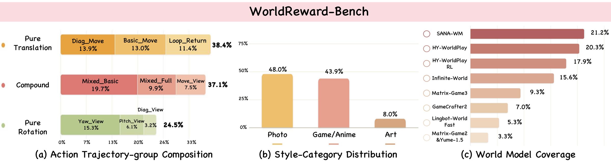
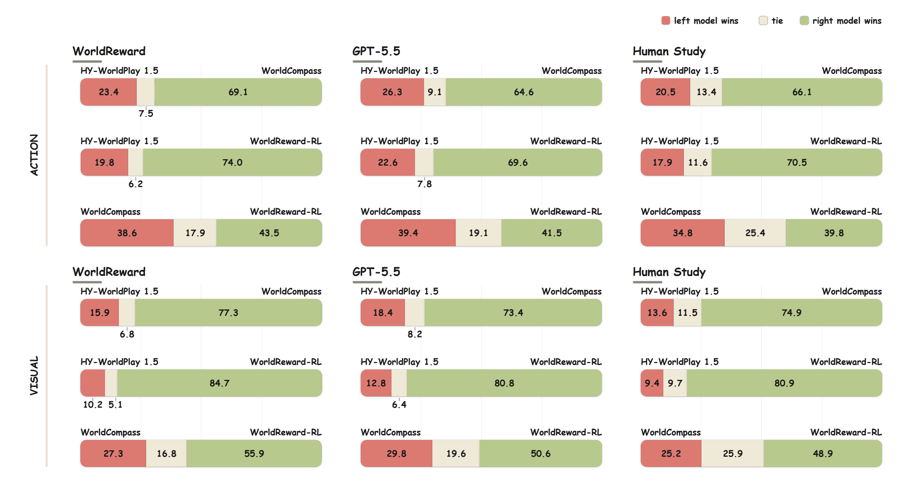
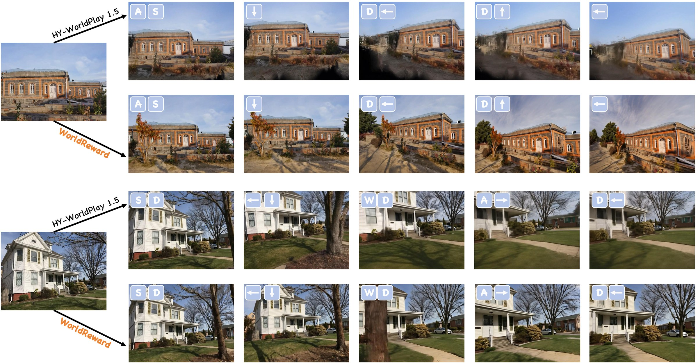
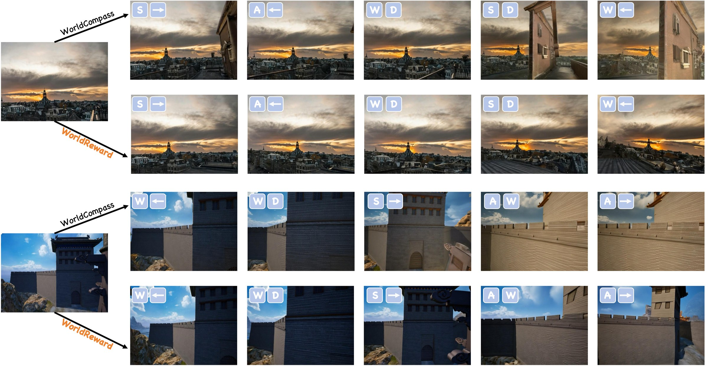

Camera-conditioned world models generate interactive videos in which commanded actions should induce the expected scene changes while appearance, geometry, and temporal dynamics remain coherent. Existing rewards typically assess these requirements separately: geometry-based rewards estimate trajectory execution but cannot judge the visual quality of the executed motion, whereas image-based rewards measure frame quality without capturing action execution or temporal dynamics. We posit that a vision-language model (VLM) offers a shared reasoning space for relating actions to their visual outcomes, but directly judging a complete long video and its full action sequence creates a long, noisy context in which short-lived local action evidence can be missed or diluted. To address these challenges, we present WorldReward, a VLM-based pairwise preference reward model that unifies action-consistency and visual-quality evaluation for camera-conditioned world models. WorldReward decomposes paired videos into action-aligned chunks and organizes each chunk into structured visual evidence, enabling the model to evaluate individual action execution together with visual quality. Chunk-level decisions are then aggregated by voting into global preferences. To train WorldReward, we construct a large-scale reasoning-augmented preference dataset using structured judgments generated by a frontier VLM and refined through multi-turn tool-based agent auditing and targeted human review. We further introduce WorldReward-Bench, a human-annotated benchmark that measures reward-model agreement with human preferences across action, appearance, and motion. Experiments show that WorldReward outperforms existing open-source reward models and proprietary VLM judges. When used for RL post-training of HY-WorldPlay 1.5, it improves both action execution and generated visual quality.

Benchmark Overview.
WorldReward-Bench composition across trajectories, visual styles, and source models:
760 human-annotated video pairs from 9 world models, labeled on action consistency,
appearance quality, and motion quality.

Pairwise evaluation by WorldReward, GPT-5.5, and human annotators for action consistency (top) and visual quality (bottom). Bars show left win/tie/right win rates (%).

Long-horizon comparison with HY-WorldPlay 1.5 (top) and our post-trained model (bottom).

Long-horizon comparison with WorldCompass (top) and our post-trained model (bottom).
@article{WorldReward,
title={WorldReward: Reward Modeling for Camera-Conditioned World Models},
author={Wang, Yibin and Wang, Zehan and Tang, Junshu and Li, Zhimin and Zhou, Yujie and Bu, Jiazi and Ling, Pengyang and Han, Feng and Zhang, Zhixiong and Xing, Long and Ding, Shengyuan and Li, Ziang and Jin, Cheng and Zang, Yuhang and Wang, Jiaqi and Pang, Tianyu},
journal={arXiv preprint arXiv:2609.03952},
year={2026}
}